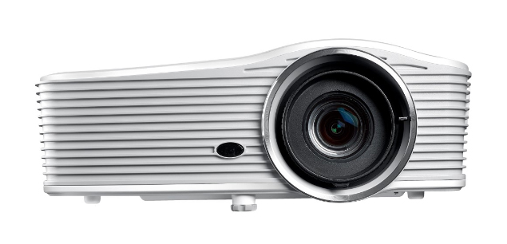
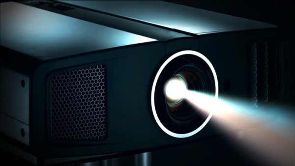
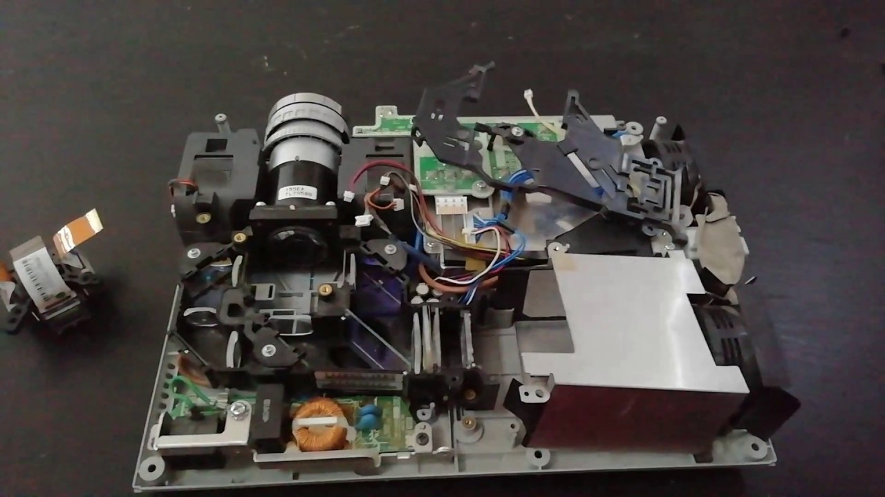
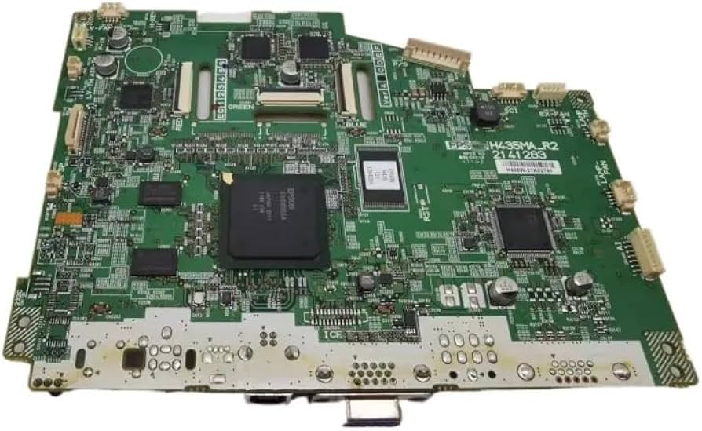
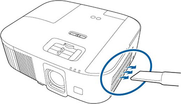
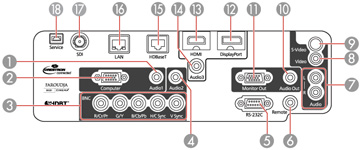
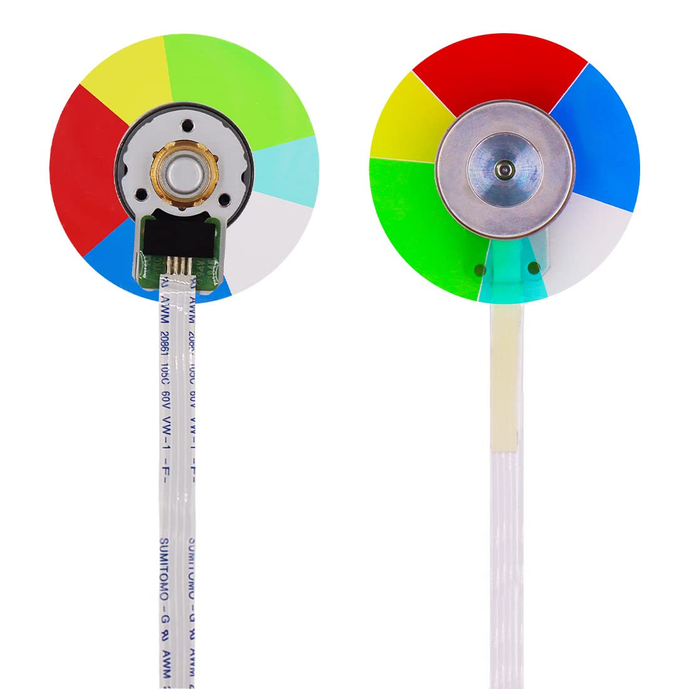

üîç Lente
Proyecta la imagen hacia la superficie. Ajustable para mejorar nitidez y tamaño.

üí° Fuente de luz
Puede ser LED, láser o lámpara. Es la base luminosa del sistema de proyección.

⚙️ Sistema óptico
Conjunto de lentes y espejos que canalizan la luz hacia el panel de imagen.

ü߆ Placa electr√≥nica
Procesa la señal de entrada y controla funciones como brillo y contraste.

üå¨Ô∏è Sistema de ventilaci√≥n
Evita el sobrecalentamiento. Incluye ventiladores internos y rejillas.

üîå Puertos de conexi√≥n
Entradas HDMI, VGA, USB, audio y más. Permiten conectar diversos dispositivos.

üåà Rueda de color
Usada en proyectores DLP. Mezcla colores RGB al girar rápidamente.

üñºÔ∏è Panel de imagen
Genera la imagen proyectada. Puede ser LCD, DLP o LCoS según el modelo.